Chanter
Wsparcie laską: podnosi statystyki grupy i może jednocześnie leczyć albo zadawać obrażenia. Broń: Staff. Rola: Wsparcie.
Skille i pasywki: opracowanie autora (Global, 31.10.2026). Stygmy: Aion 2 Companion i, gdzie jest, ściąga.
Skille aktywne
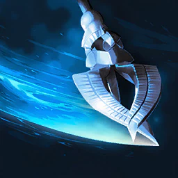
Onslaught
16
Atak podstawowy (LPM): 2 trafienia do 4 wrogów w promieniu 4 m, przywraca 100 MP. Mobilny.
Grobs i aion2data: 16 (dla Storm Chain). TheWhelps: 20. Gracze z Korei biorą 20, ale na Global 16 pozostaje celem (aion2data).
Specjalizacje
- lvl 8+20% przywracanego MP +20% MP restored — aLuckyRO na start (brak many)
- lvl 8Pochłania 0,7% HP Absorbs 0.7% HP — Grobs podczas levelowania
- lvl 8+50% Multi-Hit przy trafieniu +50% Multi-Hit on hit — Grobs (levelowanie), WallyJTV
- lvl 12−1 s CD Spinning Strike za każde trafieniezalecane -1s [Spinning Strike] cooldown on hit — Grobs, WallyJTV, aLuckyRO
- lvl 16Łańcuch Storm Chain (4. uderzenie)zalecane Adds [Storm Chain] Chain Skill — Grobs
Wybór: Na 16: −1 s CD Spinning Strike + Storm Chain. Wcześniej: absorb HP / +50% Multi-Hit (Grobs) lub +20% MP (aLuckyRO).
karta skilla na aion2.gg · Opracowanie autora na danych klienta Global (aion2data, wartości przy poziomie 10 skilla, stan 31.10.2026).
Incandescent Blow
12–16
Wypełniacz (PPM): 2 trafienia do 4 wrogów w promieniu 4 m, koszt 120 MP. Mobilny. Spam między innymi skillami.
Konflikt: Grobs (lvl 45) — 12; aion2data (meta) i TheWhelps — 16; notXeon — 2. w kolejności po Dark Crush (dla Multi-Hit na 16).
Specjalizacje
- lvl 8−20% zużycia MP -20% MP consumed — aLuckyRO
- lvl 8+200 Block podczas użycia +200 Block while using skill — Grobs (2. slot), WallyJTV
- lvl 8Do +12% obrażeń przy mniejszej liczbie celówzalecane Deals up to 12% more damage when less targets are hit — Grobs (bossy)
- lvl 12−200 Accuracy wroga na 3 s po Bursting Blow -200 enemy Accuracy for 3s on landing Bursting Blow — WallyJTV
- lvl 16Ignoruje Block i Evasion, trafia jako Multi-Hitzalecane Ignores Block and Evasion and lands as Multi-Hit — Grobs (spec na 16), notXeon, TheWhelps
Wybór: Grobs: +12% (mniej celów) + +200 Block; na 16 Multi-Hit. TheWhelps: #3 + #5. Alternatywy: −20% MP (aLuckyRO), Block + −200 Accuracy (WallyJTV).
karta skilla na aion2.gg · Opracowanie autora na danych klienta Global (aion2data, wartości przy poziomie 10 skilla, stan 31.10.2026).
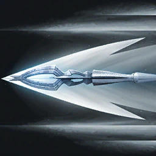
Rushing Smash
12
Doskok do celu w 20 m; obrażenia do 4 wrogom i +100 MP. Główny gap closer.
Grobs (lvl 45): 12 — dla resetu CD po zabiciu.
Specjalizacje
- lvl 8−20% odporności celu na Impact na 5 s -20% target's Impact-type Resist for 5s
- lvl 8Skill ładowany (Charge), do +200% obrażeń Changes to Charge Skill, dealing up to 200% more damage
- lvl 850% szansy na wywołanie Heat Wave Blow 50% chance to trigger [Heat Wave Blow] on hit — WallyJTV
- lvl 12Reset CD po zabiciu wrogazalecane Resets cooldown on defeating an enemy — Grobs, WallyJTV, aLuckyRO (farmienie)
- lvl 16Ignoruje Block i Evasion, trafia jako Multi-Hit Ignores Block and Evasion and lands as Multi-Hit — aLuckyRO (ważne w PvP)
Wybór: Reset CD po zabiciu (farmienie). Opcjonalnie Heat Wave Blow (WallyJTV). Poradniki nie wskazują jednoznacznie opcji z lvl 8 poza WallyJTV.
karta skilla na aion2.gg · Opracowanie autora na danych klienta Global (aion2data, wartości przy poziomie 10 skilla, stan 31.10.2026).
Impactful Crush
8
Obrażenia celowi w 20 m; 60% szansy na Stun 3 s (100% na NPC). Otwiera okno Dark Crush na 2 s.
Grobs i aLuckyRO: 8. TheWhelps: 12. WallyJTV: planuje 16 (szansa na stun), przed Recuperation.
Specjalizacje
- lvl 8Zmienia na obrażenia obszarowe (AoE) Changes to AoE damage — WallyJTV
- lvl 8+1 s czasu Stuna +1s [Impactful Crush] Stun duration — na Global mniej warte (DaevaOS)
- lvl 8Użycie w ruchuzalecane Changes to mobile skill — Grobs
- lvl 12+30% Skill Speed +30% Skill Speed — WallyJTV
- lvl 16+20% szansy na Stun +20% [Impactful Crush] Stun Chance — WallyJTV (plan na 16)
Wybór: Grobs: użycie w ruchu (lvl 8). WallyJTV: AoE + 30% Skill Speed, później +20% Stun. TheWhelps: #3 + #4.
karta skilla na aion2.gg · Opracowanie autora na danych klienta Global (aion2data, wartości przy poziomie 10 skilla, stan 31.10.2026).
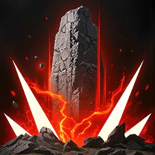
Dark Crush
16
Zadaje obrażenia celowi w zasięgu 20 m. Mobilny. Można go użyć tylko przez 2 s po Spinning Strike / Impactful Crush (3 s po Marchutan's Wrath / Ensnaring Mark).
Pierwszy skill do podbicia — zgodnie wszystkie źródła (Grobs, aion2data, aion2.gg „max first”). TheWhelps (DaevaOS): docelowo 20.
Specjalizacje
- lvl 8Pochłania 0,7% HP Absorbs 0.7% HP
- lvl 8Dodatkowe obrażenia na celu z efektem typu Impact Deals extra damage on attacking a target afflicted with Impact-type status
- lvl 8Zawsze krytykzalecane Critical Hit on hit — Grobs, aLuckyRO, gracze aion2data
- lvl 12Łańcuch Piercing Strikezalecane Adds [Piercing Strike] Chain Skill — do lvl 16 (Grobs); WallyJTV trzyma też na 16
- lvl 16Brak cooldownu Dark Crushzalecane Removes [Dark Crush] cooldown — wszyscy na lvl 16
Wybór: Do 15: krytyk + Piercing Strike. Na 16: krytyk + brak CD (Grobs, aion2data). Wariant WallyJTV: Piercing Strike + brak CD. Na 20 (3. slot): wszystkie trzy.
karta skilla na aion2.gg · Opracowanie autora na danych klienta Global (aion2data, wartości przy poziomie 10 skilla, stan 31.10.2026).
Gust Rampage
8 / pomiń
4 trafienia w cel pod Staggerem w promieniu 4 m. Spam przez cały czas trwania staggera.
Grobs: 8 (levelowanie). notXeon: przestaje używać po Dark Crush 16. TheWhelps: nie leveluje. WallyJTV: ceni lvl 16 w dungeonach Transcendence.
Specjalizacje
- lvl 8Pochłania 5% HPzalecane Absorbs 5% HP — Grobs, aLuckyRO
- lvl 8Przywraca 120 MP Restores 120 MP — aLuckyRO poza najtrudniejszymi Nightmare
- lvl 8Użycie w ruchu Changes to mobile skill
- lvl 12Multi-Hit przy trafieniu Multi-Hit on hit — WallyJTV
- lvl 16−1 s CD wszystkich skilli za trafienie -1s all skill cooldowns on hit — WallyJTV (Transcendence)
Wybór: Absorb 5% HP (Grobs, aLuckyRO). Opcjonalnie: MP, Multi-Hit, na 16 −1 s CD wszystkiego (WallyJTV).
karta skilla na aion2.gg · Opracowanie autora na danych klienta Global (aion2data, wartości przy poziomie 10 skilla, stan 31.10.2026).
Heat Wave Blow
brak danych
Po bloku: obrażenia do 4 wrogom w promieniu 4 m, 40% szansy na Seal 3 s (100% na NPC).
Brak zalecanego poziomu. WallyJTV używa go w buildzie na Block (otwierany przez Rushing Smash); aLuckyRO i TheWhelps traktują go jako skill PvP. aion2.gg: rzadko blokujesz, gdy boss bije tanka.
Specjalizacje
- lvl 840% szansy na Stun 3 s 40% chance to inflict Stun for 3s
- lvl 8+20% szansy na Seal +20% Seal Chance
- lvl 8Do +20% obrażeń przy większej liczbie celów Up to +20% damage when more targets hit
- lvl 12Ignoruje Block i Evasion, trafia jako Multi-Hit Ignores Block and Evasion and lands as Multi-Hit
- lvl 1625% szansy na reset CD po bloku 25% chance to reset [Heat Wave Blow] cooldown on Block
Wybór: brak zalecenia w poradnikach
karta skilla na aion2.gg · Opracowanie autora na danych klienta Global (aion2data, wartości przy poziomie 10 skilla, stan 31.10.2026).
Recuperation
12–16
Przywraca HP i usuwa 1 debuff casterowi i drużynie w 40 m; potem leczy co 2 s przez 8 s. Mobilny, oczyszczający.
Konflikt: Grobs — 16; aion2.gg — „maksuj w pierwszej kolejności”; TheWhelps — 12; notXeon: 16 niepotrzebne; WallyJTV woli dać 16 Impactful/Tremor Crush.
Specjalizacje
- lvl 8+1 użycie z rzędu, HoT do 2 stackówzalecane +1 consecutive use and Heal over Time can stack up to 2 times — wszyscy (Grobs, DaevaOS, Vault)
- lvl 8Usuwa do 2 debuffów Removes up to 2 debuffs — WallyJTV w trudnych dungeonach
- lvl 8+4 s czasu leczenia +4s healing duration
- lvl 12+5% przywracanego HPzalecane +5% HP restored — Grobs, DaevaOS
- lvl 16−3 s cooldownu -3s cooldown — Grobs na 16 (zamiast +5% HP)
Wybór: Drugie użycie z rzędu + 5% HP. Na 16 Grobs zamienia +5% HP na −3 s CD (notXeon woli zostać przy +5% HP).
karta skilla na aion2.gg · Opracowanie autora na danych klienta Global (aion2data, wartości przy poziomie 10 skilla, stan 31.10.2026).
Tremor Crush
8
Po uniku [Dodge] lub w locie doskakuje do celu w 10 m; 50% szansy na Stun 3 s (100% na NPC). Drugi gap closer.
Grobs i DaevaOS: 8. TheWhelps: 12. WallyJTV: chciałby 16 (stun).
Specjalizacje
- lvl 8+300 Staminy przy trafieniu Restores 300 Stamina on hit — TheWhelps (#1)
- lvl 8+10 m zasięgu (razem 20 m)zalecane +10m [Tremor Crush] range — Grobs, DaevaOS, WallyJTV
- lvl 8+50% Multi-Hit przy trafieniu +50% Multi-Hit on hit
- lvl 12Łańcuch Surging Strike Adds [Surging Strike] Chain Skill
- lvl 16+25% szansy na Stun +25% [Tremor Crush] Stun Chance
Wybór: +10 m zasięgu — oba gap closery mają wtedy 20 m. TheWhelps: #1 + #2.
karta skilla na aion2.gg · Opracowanie autora na danych klienta Global (aion2data, wartości przy poziomie 10 skilla, stan 31.10.2026).
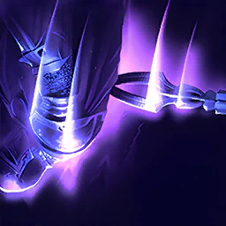
Wave Blow
12 / pomiń
2 trafienia w ogłuszony cel w promieniu 4 m + Knockdown na 3 s. 7% szansy na aktywację na celu z odpornością na kontrolę.
TheWhelps: 12 (używa na CD — obniża PvE Damage Boost bossa). aLuckyRO: pomija poza trudnymi Nightmare. aion2.gg: skill do levelowania i PvP.
Specjalizacje
- lvl 8Multi-Hit przy trafieniu Multi-Hit on hit — WallyJTV
- lvl 8+6 m zasięgu +6m Range — TheWhelps (#2), WallyJTV
- lvl 8+1 s Knockdown +1s Knockdown duration
- lvl 12−15% PvE Damage Boost celu na 10 s -15% target's PvE Damage Boost and -7.5% PvP Damage Boost for 10s — TheWhelps (#4)
- lvl 16−5 s cooldownu -5s cooldown
Wybór: Brak zgody. TheWhelps: +6 m + −15% PvE Damage Boost celu. WallyJTV: Multi-Hit + 6 m.
karta skilla na aion2.gg · Opracowanie autora na danych klienta Global (aion2data, wartości przy poziomie 10 skilla, stan 31.10.2026).
Spinning Strike
16
Wybiera cel w 20 m i zadaje obrażenia do 4 wrogom w pobliżu. Przy trafieniu +15% Critical Damage Boost na 30 s (do 2 stacków). Otwiera okno Dark Crush na 2 s. Mobilny.
Grobs i aion2data: 16. TheWhelps: 20. aLuckyRO: +12. Grobs: 16 „miłe, ale nie zmienia gry”.
Specjalizacje
- lvl 8−5 s cooldownuzalecane -5s cooldown — Grobs, WallyJTV, aLuckyRO (do 16)
- lvl 8+10% Heal Boost (do 20%) +10% Heal Boost (up to 20%)
- lvl 8Do +20% obrażeń przy mniejszej liczbie celówzalecane Up to +20% damage when less targets hit — Grobs, WallyJTV, aLuckyRO
- lvl 1240% szansy na Seal na 3 s 40% chance to inflict Seal for 3s
- lvl 16Ignoruje Block i Evasion, zawsze krytykzalecane Ignores Block and Evasion and lands as a Critical Hit — Grobs na 16 (zamiast −5 s)
Wybór: Do 15: −5 s CD + do +20% obrażeń (mniej celów). Na 16 Grobs zamienia −5 s na „zawsze krytyk”. TheWhelps na 20: #1, #3, #5.
karta skilla na aion2.gg · Opracowanie autora na danych klienta Global (aion2data, wartości przy poziomie 10 skilla, stan 31.10.2026).
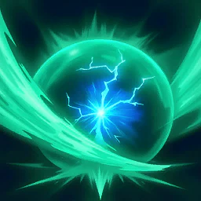
Defiance
8–12
Usuwa Stun, Knockdown, Airborne, Grab, Frost i Fear; daje Tenacity (odporność na efekty) na 5 s. Niezależny od redukcji CD.
aLuckyRO: 8 wystarczy. TheWhelps: 12. Obecny w 43% buildów (Aion2Vault).
Specjalizacje
- lvl 8Łańcuch Crushing Strike Adds [Crushing Strike] Chain Skill
- lvl 8+1000 Staminy po użyciu Restores 1,000 Stamina on using [Defiance]
- lvl 8+10% HP po użyciu Restores 10% HP on using [Defiance] — TheWhelps (#3)
- lvl 12+2 s Tenacity +2s Tenacity duration — TheWhelps (#4)
- lvl 16+50% PvE Damage Tolerance na czas Tenacity +50% PvE Damage Tolerance and +25% PvP Damage Tolerance for Tenacity duration — TheWhelps (#5 na 16)
Wybór: Tylko TheWhelps: #3 + #4 (na 16: #3 + #5). Inne poradniki nie podają specjalizacji dla PvE.
karta skilla na aion2.gg · Opracowanie autora na danych klienta Global (aion2data, wartości przy poziomie 10 skilla, stan 31.10.2026).
Pasywki
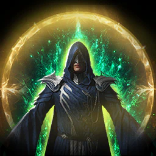
Blessing of Life
brak danych
+1500 HP, dodatkowo +20% Max HP i Heal Boost zależny od Attack (przy lvl 10).
WallyJTV: pierwsza (build przetrwania). aLuckyRO: niewiele daje, póki Max HP jest niskie.
Pasywka nie ma specjalizacji.
karta skilla na aion2.gg · Opracowanie autora na danych klienta Global (aion2data, wartości przy poziomie 10 skilla, stan 31.10.2026).
Crossguard
pomiń*
+200 Block i leczenie przy bloku.
*Sprzeczne opinie: notXeon i aLuckyRO — niewarte / bezużyteczne; WallyJTV bierze wcześnie (build na Block).
Pasywka nie ma specjalizacji.
karta skilla na aion2.gg · Opracowanie autora na danych klienta Global (aion2data, wartości przy poziomie 10 skilla, stan 31.10.2026).
Protection Circle
opcjonalnie
Stack za każde trafienie; przy 10 stackach Divine Barrier dla castera i drużyny (4% Max HP, 10 s). Tarcza 30% obrażeń, gdy HP < 50%.
Grobs zwraca uwagę (osłania drużynę podczas bicia bossa); aLuckyRO: średni wybór; WallyJTV: wcześnie. Poziomu nie podano.
Pasywka nie ma specjalizacji.
karta skilla na aion2.gg · Opracowanie autora na danych klienta Global (aion2data, wartości przy poziomie 10 skilla, stan 31.10.2026).
Inspiring Spell
priorytet 4
+190 Critical Hit i +5% Perfect Chance (przy lvl 10).
Następna w kolejce (TheWhelps, DaevaOS); notXeon: 2. po Attack Preparation; Vault: alternatywa dla Impact Hit. Poziomu nie podano.
Pasywka nie ma specjalizacji.
karta skilla na aion2.gg · Opracowanie autora na danych klienta Global (aion2data, wartości przy poziomie 10 skilla, stan 31.10.2026).
Attack Preparation
10 (max)
+10% PvE Damage Boost, +5% PvP Damage Boost, +20% Defense, +100 Accuracy (przy lvl 10).
Pierwsza pasywka — wszyscy (aion2.gg „max first”, Vault, aLuckyRO „top PvE”). Więcej poziomów z Daevanion / Arcana.
Pasywka nie ma specjalizacji.
karta skilla na aion2.gg · Opracowanie autora na danych klienta Global (aion2data, wartości przy poziomie 10 skilla, stan 31.10.2026).
Impact Hit
priorytet 3
Zwiększa szansę na efekty typu Impact (+22%) i Double Chance (+3%) (przy lvl 10).
Grobs i TheWhelps: jedna z 3 pasywek, które się liczą. Konkretnego poziomu poradniki nie podają. WallyJTV: tylko PvP.
Pasywka nie ma specjalizacji.
karta skilla na aion2.gg · Opracowanie autora na danych klienta Global (aion2data, wartości przy poziomie 10 skilla, stan 31.10.2026).
Raging Spell
brak danych
Dodatkowe obrażenia celom pod Staggerem lub efektem typu Impact.
Sprzeczne opinie: aLuckyRO lubi na bossy ze staggerem; notXeon: niewarte punktów.
Pasywka nie ma specjalizacji.
karta skilla na aion2.gg · Opracowanie autora na danych klienta Global (aion2data, wartości przy poziomie 10 skilla, stan 31.10.2026).
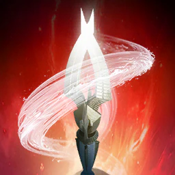
Earth's Promise
priorytet 5
Każde trafienie obniża PvE Damage Tolerance celu o 9% na 5 s — cała drużyna bije mocniej. Nie działa razem z [Chain of Torment] Clerica.
Po Inspiring Spell (TheWhelps, notXeon, WallyJTV). Poziomu nie podano.
Pasywka nie ma specjalizacji.
karta skilla na aion2.gg · Opracowanie autora na danych klienta Global (aion2data, wartości przy poziomie 10 skilla, stan 31.10.2026).
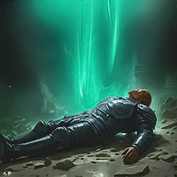
Survival Willpower
brak danych
+35% Status Effect Resist; przy Stun/Knockdown/Airborne/Frost/Fear +30% PvE Damage Tolerance na 5 s.
WallyJTV: tylko do PvP. Brak zalecenia PvE.
Pasywka nie ma specjalizacji.
karta skilla na aion2.gg · Opracowanie autora na danych klienta Global (aion2data, wartości przy poziomie 10 skilla, stan 31.10.2026).
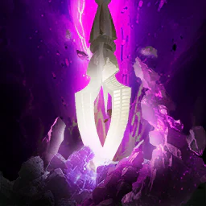
Wind's Promise
10 (max)
+12% Critical Damage Boost i 50% szansy na dodatkowe obrażenia przy krytyku (przy lvl 10). Pasuje do „zawsze krytyk” w Dark Crush.
Razem z Attack Preparation na start (Vault). notXeon: można zmaksować zaraz po odblokowaniu. TheWhelps: 1. pasywka.
Pasywka nie ma specjalizacji.
karta skilla na aion2.gg · Opracowanie autora na danych klienta Global (aion2data, wartości przy poziomie 10 skilla, stan 31.10.2026).
Stygmy
Fracturing Blow
4. slot, solo
Doskakuje 20 m for 1 288 obrażeń, cuts Defense o 30% na 5 s, +20% obrażeń na cel z Impact-type status; 20 stagger
Na wyższym poziomie: 3 606 obrażeń
Build PvE: czwarty slot, opcja 2 (29%), solo albo czysty DPS, −30% Defense celu.
Perki stygmy
- poziom 5−15 s CD
- poziom 10Exposed na 5 s przy trafieniu
- poziom 15Critical Hit przy trafieniu
- poziom 20+30% więcej obrażeń na Impact-type status
karta skilla na aion2.gg · Aion 2 Companion (aion2.grimvane.app), wartości Global przy podanym poziomie skilla.
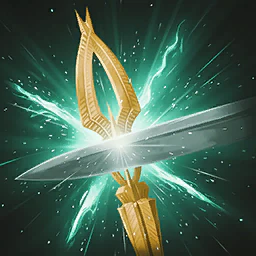
Focused Defense
brak danych
+100% Block obrażeń Reduction i gwarantowany Block podczas held; przywraca 110 MP i stamina once na Block
Na wyższym poziomie: 300 MP i stamina
Perki stygmy
- poziom 5One extra użycie z rzędu
- poziom 10Można używać w ruchu
- poziom 15+20% Move Speed na 3 s na Block
- poziom 205% HP back once na Parry
karta skilla na aion2.gg · Aion 2 Companion (aion2.grimvane.app), wartości Global przy podanym poziomie skilla.
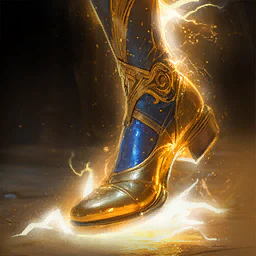
Sprint Mantra
4. slot
+10,5% Move Speed; 15% chance przy trafieniu atakiem do leczenie ciebie i pobliskich członków drużyny for 127-140 HP (wewnętrzny CD 1 s)
Na wyższym poziomie: +20%; 271-298 HP
Build PvE: czwarty slot, opcja 1 (66%). Toggle szybkości i leczenia przy trafieniu.
Perki stygmy
- poziom 5+10% Incoming Heal
- poziom 10+30% natural stamina regen
- poziom 15+50% healing przy 50% HP albo less
- poziom 20+10% Restoration
karta skilla na aion2.gg · Aion 2 Companion (aion2.grimvane.app), wartości Global przy podanym poziomie skilla.
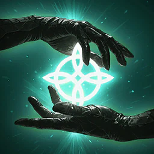
Healing Touch
gdy leczysz
Leczy ciebie i członków drużyny w 40 m for 927-1 020 HP
Na wyższym poziomie: 1 978-2 176 HP
Gdy grasz healerem w party. Leczenie ciebie i drużyny w 40 m.
Perki stygmy
- poziom 5+20% healing przy 50% HP albo less
- poziom 10Przywraca 1 000 stamina
- poziom 15Usuwa 5 debuffs
- poziom 20+5% HP przywrócone
karta skilla na aion2.gg · Aion 2 Companion (aion2.grimvane.app), wartości Global przy podanym poziomie skilla.
Undefeated Mantra
20
+10,5% PvE Damage Boost i PvE Damage Tolerance (+5,25% PvP) dla ciebie i pobliskich członków drużyny
Na wyższym poziomie: +20% (+10% PvP)
Build PvE autora: pierwsza stygma na 20. Aion2Vault, 545 buildów: 99%.
Perki stygmy
- poziom 5+100 Critical Hit
- poziom 10+100 Accuracy
- poziom 15+5% Critical Damage Boost
- poziom 20+5% Double Chance
karta skilla na aion2.gg · Aion 2 Companion (aion2.grimvane.app), wartości Global przy podanym poziomie skilla.
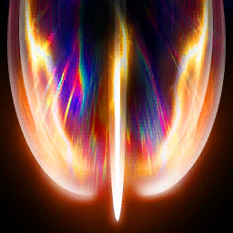
Obliterate
pod stagger
1 078 obrażeń do 4 wrogów; 50% szansy na knock down (100% na NPCs); 50 stagger
Na wyższym poziomie: 3 019 obrażeń
Dungeony, w których trzeba dobijać stagger. 50% Knockdown, 100% na NPC.
Perki stygmy
- poziom 5Do 20% więcej obrażeń na więcej celów
- poziom 10+20% Skill Speed
- poziom 15Critical Hit przy trafieniu
- poziom 20+25% knockdown chance
karta skilla na aion2.gg · Aion 2 Companion (aion2.grimvane.app), wartości Global przy podanym poziomie skilla.
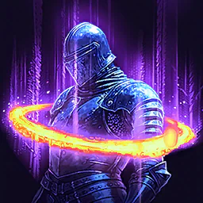
Ensnaring Mark
brak danych
1 034 obrażeń do 4 wrogów; 50% szansy na seal na 5 s (100% na NPCs); Dark Crush becomes available na 3 s na use
Na wyższym poziomie: 2 895 obrażeń
Perki stygmy
- poziom 550% szansy na root
- poziom 1050% szansy na -1 000 wróg Max Stamina
- poziom 15+3 s seal, root i stamina effects
- poziom 20+25% chance na all three
karta skilla na aion2.gg · Aion 2 Companion (aion2.grimvane.app), wartości Global przy podanym poziomie skilla.
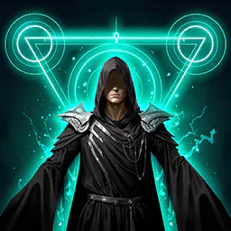
Impeding Authority
gdy leczysz
Tarcza of 16% Max HP na 20 s na ciebie i członków drużyny w 40 m
Na wyższym poziomie: 35%
Gdy grasz healerem w party. Tarcza 35% Max HP na poziomie 20.
Perki stygmy
- poziom 5+15% Defense
- poziom 10+10% Incoming Heal
- poziom 15+10% PvE (+5% PvP) Damage Tolerance
- poziom 207% of Max HP back gdy tarcza ends albo przebija
karta skilla na aion2.gg · Aion 2 Companion (aion2.grimvane.app), wartości Global przy podanym poziomie skilla.
Power of the Storm
w zestawie
Ciebie get +20% Combat Speed i -20% skill cooldowns na 10 s; członków drużyny w 40 m get +20% Combat Speed i -10% cooldowns
Na wyższym poziomie: 20 s
Build PvE: 91% buildów. +20% Combat Speed i krótszy CD na burst.
Perki stygmy
- poziom 5−30 s CD
- poziom 10+200 Accuracy
- poziom 15+200 Critical Hit
- poziom 20+20% Attack dla ciebie, +10% for drużyna
karta skilla na aion2.gg · Aion 2 Companion (aion2.grimvane.app), wartości Global przy podanym poziomie skilla.
Marchutan's Wrath
w zestawie
1 384 obrażeń do 4 wrogów w 4 m of cel w 20 m; Dark Crush becomes available na 3 s na use
Na wyższym poziomie: 3 876 obrażeń
Build PvE: 82%. Otwiera 3 s okno na Dark Crush.
Perki stygmy
- poziom 5Do 20% więcej obrażeń na mniej celów
- poziom 1050% szansy na stun na 3 s
- poziom 15-70% Incoming Heal i potion recovery na celu
- poziom 20+25% stun chance
karta skilla na aion2.gg · Aion 2 Companion (aion2.grimvane.app), wartości Global przy podanym poziomie skilla.
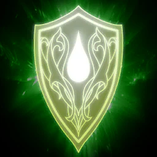
Guardian Blessing
brak danych
+5,4% Max HP na 120 s i instant 5,4% leczenie na yourself; dispele go nie zdejmują
Na wyższym poziomie: +13%
Perki stygmy
- poziom 5+10% Status Effect Resist
- poziom 10Crossguard x1,5 for czas trwania
- poziom 15Wind's Promise x1,5 for czas trwania
- poziom 20+10% Incoming Heal
karta skilla na aion2.gg · Aion 2 Companion (aion2.grimvane.app), wartości Global przy podanym poziomie skilla.
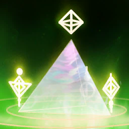
Barrier Spell
brak danych
Ciebie i członków drużyny w 40 m nie spadnie poniżej 10% HP na 3 s; some heavy attacks still get through, i it shares lockout z other invincibility effects
Na wyższym poziomie: 142 s cooldown
Perki stygmy
- poziom 510% HP back gdy it expires na jego own
- poziom 10+10% PvE (+5% PvP) Damage Tolerance na 10 s po it expires
- poziom 15+10% HP limit
- poziom 20+1 s
karta skilla na aion2.gg · Aion 2 Companion (aion2.grimvane.app), wartości Global przy podanym poziomie skilla.

Assault Shock
brak danych
986 obrażeń do 4 wrogów; 30% szansy na stun na 3 s (100% na NPCs); do +20% Defense o cele hit
Na wyższym poziomie: 2 763 obrażeń
Perki stygmy
- poziom 5+20% Attack na 5 s przy trafieniu
- poziom 10500 MP obrażeń przy trafieniu
- poziom 15+10 m range
- poziom 20+20% stun chance
karta skilla na aion2.gg · Aion 2 Companion (aion2.grimvane.app), wartości Global przy podanym poziomie skilla.
Build PvE
Skrót z buildu PvE autora (Global, lvl 45, stan 31.10.2026).
- Kolejność skilli: Dark Crush (główne obrażenia, tylko w oknie) → Onslaught (atak podstawowy, MP) → Spinning Strike (buff Critical Damage, otwiera okno) → Recuperation (sustain).
- Okno na Dark Crush: 2 s po Spinning Strike albo Impactful Crush, 3 s po Marchutan's Wrath. Na poziomie 16 Dark Crush nie ma cooldownu i w oknie idzie spamem.
- Stygmy (Aion2Vault, 545 buildów): Undefeated Mantra 99% — pierwsza na 20; Power of the Storm 91% pod burst; Marchutan's Wrath 82% otwiera okno 3 s; czwarty slot Sprint Mantra 66% albo Fracturing Blow 29% (solo / czysty DPS, −30% Defense).
- Gdy leczysz: Impeding Authority albo Healing Touch zamiast slotu ofensywnego.
- Pasywka na start: Attack Preparation, potem pasywki od obrażeń.
Obliterate zostaw do dungeonów, w których trzeba dobijać stagger.
Ściąga do pobrania
Obrazki z tego samego opracowania co karty. Tekst na stronie jest przepisany obok, żeby dało się go wyszukać. Na ściądze skilli Clerica piąta specjalizacja bywa ucięta („+1 więcej”) — pełną listę ma karta powyżej.
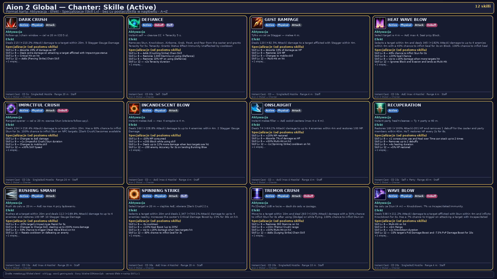
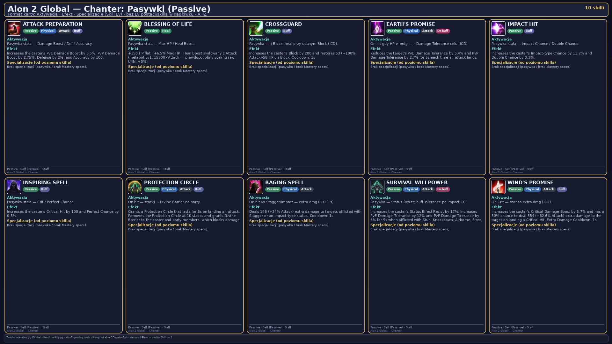
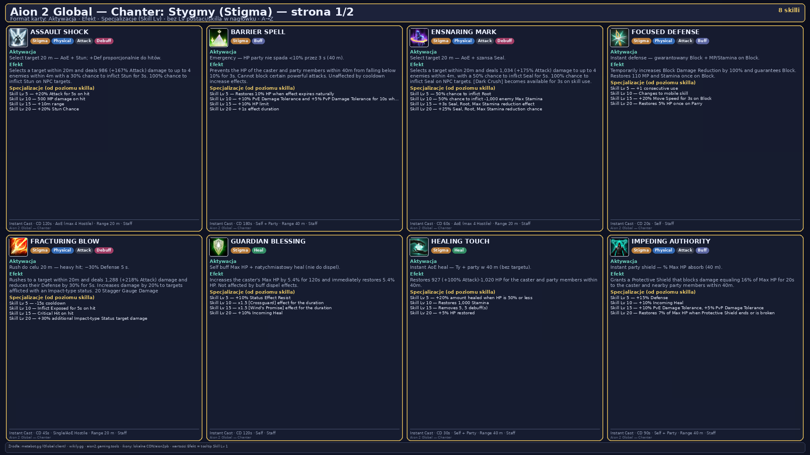
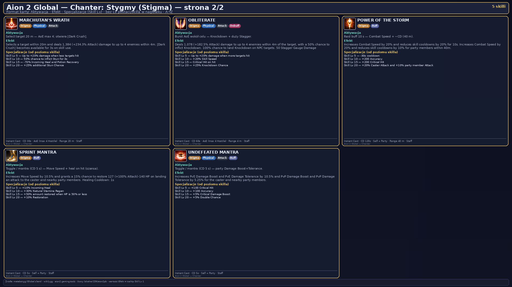
Źródła
- Aion 2 Companion — skille, pasywki, stygmy
- aion2.gg — lista skilli klasy
- aion2.gg — build PvE
- aion2data.com — dane klienta Global
- aion2data.com — Chanter: wszystkie skille (dane klienta Global 2026.10.28)
- aion2data.com — Chanter PvE (meta, „Skills to level first”)
- Aion2Vault — Chanter PvE (build lvl 45 Grobsa, specjalizacje, pasywki)
- Aion2Vault — statystyki buildów
- DaevaOS — poradnik Chantera (Grobs, WallyJTV, aLuckyRO, TheWhelps)
- Aion2.gg — Chanter PvE
Data tej strony: 11 listopada 2026. Edycja Global (Steam, EU). Nazwy skilli są po angielsku, tak jak w kliencie.